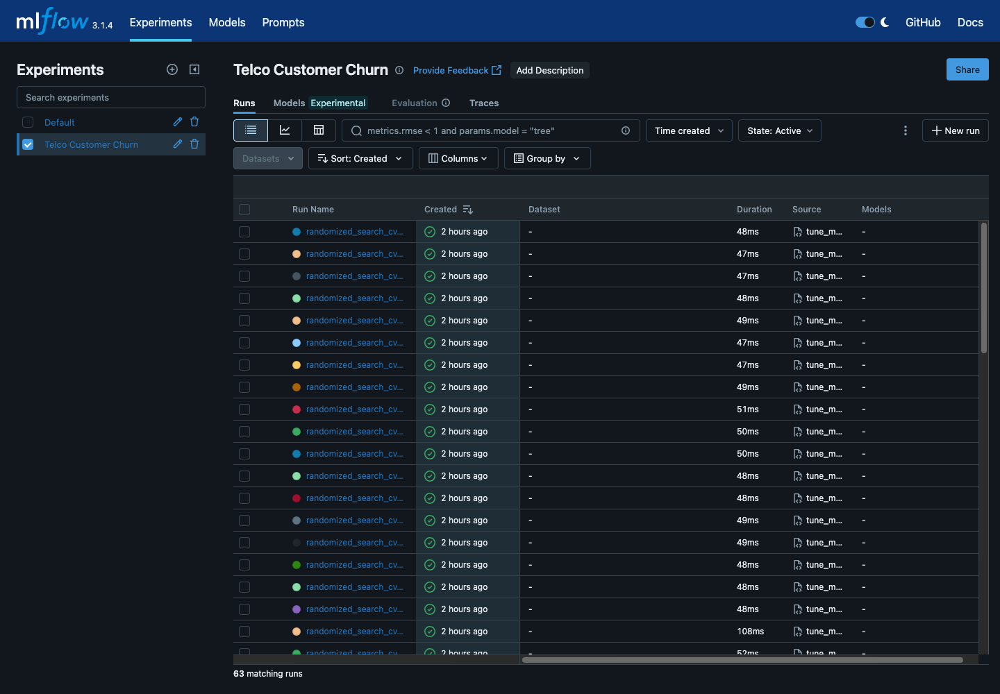
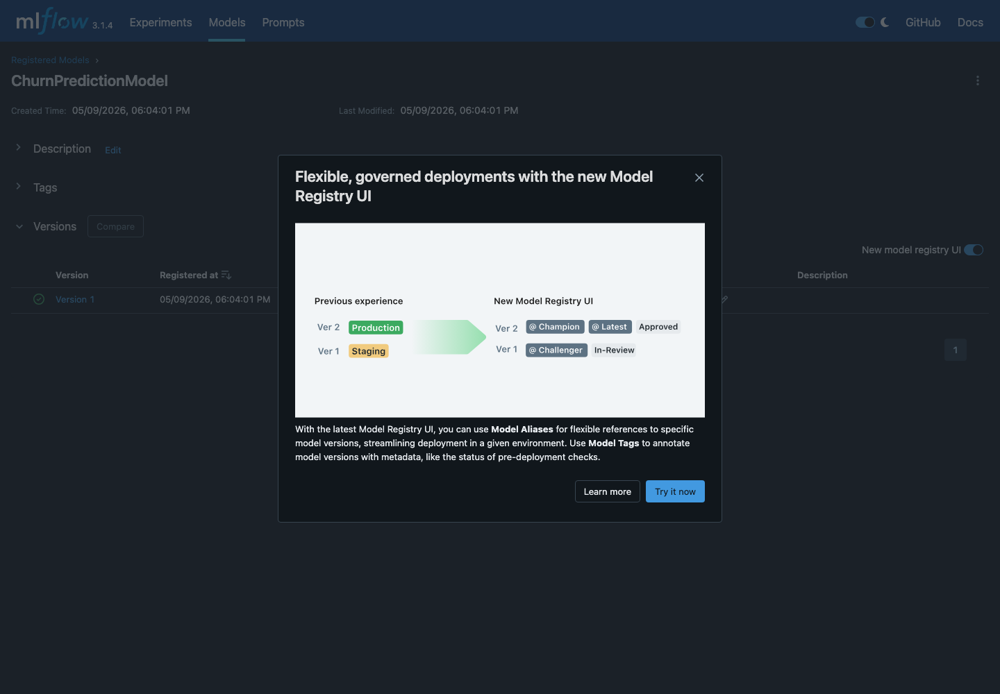
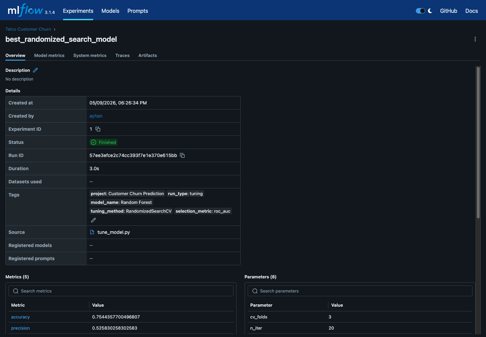
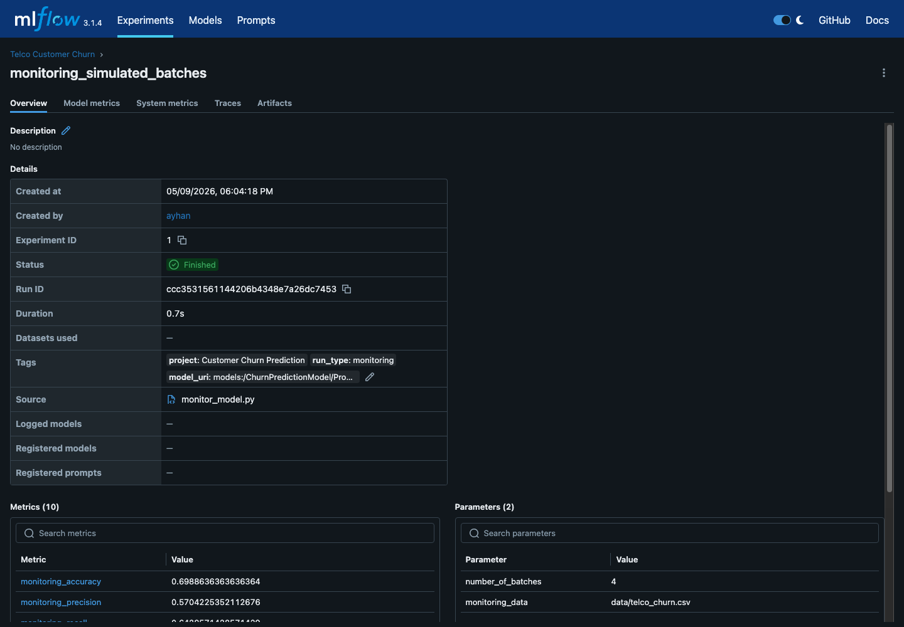

AIN-3009 Delivering AI Applications with MLOps
Customer Churn Prediction with MLflow
End-to-end machine learning lifecycle management for telecom customer churn: tracking, tuning, registry, serving, and monitoring.
Problem and Dataset
Predict customers likely to leave
- Domain: telecommunications customer retention.
- Dataset: Telco Customer Churn, 7,043 customers and 21 columns.
- Target:
Churn, encoded as binary Yes/No outcome. - Business goal: identify high-risk customers for retention campaigns.
Lifecycle Workflow
One repeatable MLflow pipeline
1Preprocess data with sklearn pipelines
3Baseline models trained and compared
63Total MLflow runs logged
20RandomizedSearchCV candidates
v1Registered production model
4Monitoring batches simulated
Experiment Tracking
MLflow records every run
Baseline, tuning, randomized search, and monitoring runs are visible in the same experiment.

Model Results
Random Forest is the production candidate
0.8476Best CV ROC-AUC from RandomizedSearchCV
0.8434Best production test ROC-AUC
0.6316Best production F1-score
RandomizedSearchCV strengthened the tuning process, while the final production model was selected by held-out test performance.
Model Registry
Production is versioned
ChurnPredictionModel has version 1 with @production and @staging aliases.

Deployment
Served with MLflow Models
The production model was served locally and tested through the /invocations endpoint. A sample customer returned prediction 1, meaning churn risk.

Monitoring
Performance tracked over batches
Four simulated production batches log accuracy, precision, recall, F1-score, ROC-AUC, churn rate, tenure, and charges.

Conclusion
MLflow turns a model into a managed lifecycle
- Experiment tracking makes comparisons auditable.
- Model Registry creates a clear production handoff.
- Serving and monitoring complete the practical MLOps loop.